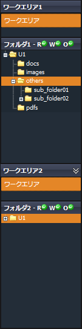
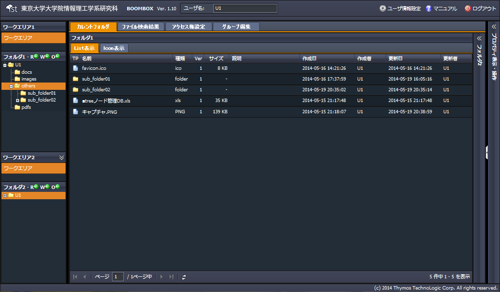
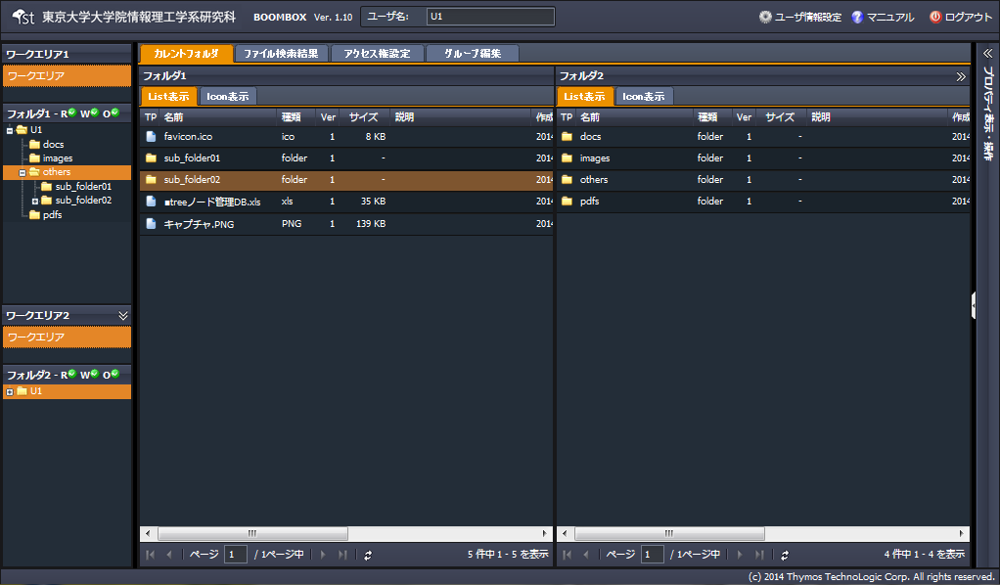

SecretFilesマニュアル
3. SecretFilesサービス
3.2 各ペインの説明
3.2.2 左ペイン
SecretFilesでは、一人の利用者が複数のワークエリアに入って作業をすることができます。初期導入時の構成では、設定されているワークエリアは「個人」利用目的のひとつのみです。
ワークエリアの追加は、現在は、管理者権限のみで実行可能です。
今後の機能拡充により、一般の利用者でもコントロール権限を持つフォルダをワークエリアとして利用することができるようになる予定です。
ワークエリアとは、作業の目的に合わせて用意したサーバ内の異なる領域のことです。
例えば、組織全体で使用するワークエリアにAという名前をつけ、小さなグループ内で使用するワークエリアの名前はBとし、自分一人で使うワークエリアをCと名付けたとしましょう。
ワークエリアペインでの表示は上から順にA、B、Cとなります。
それぞれのワークエリアは、異なるサーバにあると考えると分かりやすいでしょう。
利用するワークエリアの選択を変えることで、ワークエリアごとにログインをし直さなくても、すぐに最適なサーバの領域にアクセスすることができます。
 ワークエリア1
利用者がアクセスできるワークエリアはすべて表示されています。
ワークエリアの選択を変えるときは、表示しているワークエリアの名前をクリックします。
すぐ下に表示しているフォルダツリー(フォルダ1)はそれぞれのワークエリアによって異なりますから、ワークエリアの選択を変えると、すぐにフォルダツリーの表示も変わります。
フォルダ1
ワークエリアごとに用意されているフォルダツリーを表示します。
初期状態では、アクティベーションにて入力したユーザ名と同名のフォルダがルートフォルダとして設定されています。
この名前を変更するには、プロパティペインにてフォルダ名の変更を行なって下さい。
* ユーザ情報設定にてユーザ名を変更しても、このフォルダ名は変更されません。
いずれかのフォルダを選択すると、中央の「ファイル全体表示」ペインにそのフォルダの内部にあるフォルダとファイルの一覧を表示します。
ワークエリア2
ワークエリア2とワークエリア1の内容は同じです。
複数のワークエリアの中身を同時に見たい場合などに表示すると便利です。
を押すと、隠れていたペインが表示されます。
隠すときには を押します。
フォルダ2
ワークエリア2の選択状態に合わせたフォルダツリーを表示します。
* フォルダツリーの中身は、中央の「ファイル全体表示」ペインの右側に隠れています。
 と表示されている箇所をクリックすると、拡大表示されます。
と表示されている箇所をクリックすると、拡大表示されます。(フォルダ2のファイル一覧リストが非表示の状態です。)

(フォルダ2のファイル一覧リストが表示されている状態です。) 